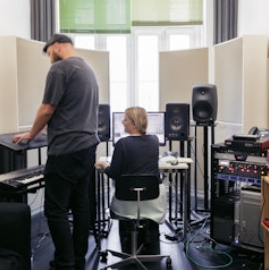
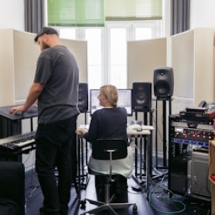
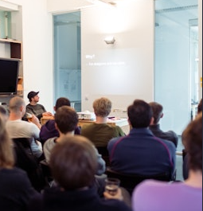
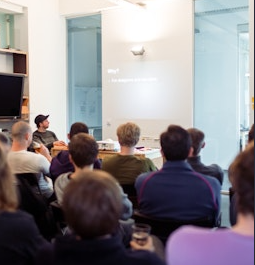

ableton
Nós criamos o Live, Push, Note
e
Link - software e hardware únicos para criação e performance musical. Com esses produtos, nossa comunidade de usuários cria coisas incríveis.A Ableton foi fundada em 1999 e lançou a primeira versão do Live em 2001. Nossos produtos são usados por uma comunidade de músicos dedicados, designers de som e artistas de todo o mundo.


Fazer música não é fácil. Leva tempo, esforço e aprendizado. Mas quando você está no ritmo, é incrivelmente gratificante.
Nós sentimos da mesma forma sobre a criação de produtos Ableton. A força motriz por trás da Ableton é nossa paixão pelo que fazemos, e pelas pessoas para quem fazemos isso.
Why Ableton - Juanpe Bolivar
Somos mais de 350 pessoas de 30 países diferentes divididos entre nossa sede em Berlim e nossos escritórios em Los Angeles e Tóquio.
A maioria de nós é composta por músicos ativos, produtores e DJs, e muitos de nós utilizam o Live e o Push todos os dias. Vimos de diferentes origens culturais e profissionais. Alguns de nós têm doutorado, outros são autodidatas, e a maioria está em algum ponto intermediário. O que nos conecta é a crença compartilhada de que cada um de nós tem as habilidades e conhecimento para contribuir com algo grande: ajudar a moldar o futuro da cultura musical.

 

Acreditamos que é preciso concentração para criar instrumentos verdadeiramente excepcionais. Trabalhamos apenas em alguns produtos e nos esforçamos para torná-los incríveis.
Em vez de ter um processo único para todos, tentamos dar às nossas pessoas o que precisam para fazerem sua mágica e crescerem. Descobrimos que obter os melhores resultados vem de construir equipes que sejam ricamente diversas e, portanto, capazes de explorar problemas a partir de um conjunto mais amplo de perspectivas. Nem sempre concordamos um com o outro, mas a opinião e o debate são valorizados e incentivados abertamente.

Somos apaixonados pelo que fazemos, mas também somos igualmente apaixonados por melhorar quem somos.
Trabalhamos arduamente para promover um ambiente onde as pessoas possam crescer tanto pessoalmente quanto profissionalmente, e nos esforçamos para criar uma abundância de oportunidades para aprender com e uns com os outros.
Ao lado de um programa interno de treinamento, os funcionários são ativamente apoiados na aquisição de novos conhecimentos e habilidades, e são orientados a aplicá-los em seu trabalho diário. Além disso, os salões de desenvolvimento e música organizados pela equipe são uma oportunidade para discutir novas tecnologias, técnicas de produção e melhores práticas.
 

ueremos que nossos funcionários amem estar aqui. Como estamos procurando talentos excepcionais de todo o mundo, faremos tudo o que estiver ao nosso alcance para tornar sua transição o mais fácil possível.
Se você está se juntando a nós em Berlim, vamos ajudar com a mudança e papelada. Até oferecemos aulas gratuitas de alemão ou inglês. Além disso, trabalhar na Alemanha significa que você pode esperar um seguro de saúde abrangente para você e sua família, além de licença maternidade e paternidade generosas. O horário de trabalho é flexível, mas nem tudo é trabalho; temos várias saídas da empresa e em equipe ao longo do ano, bem como uma variedade de atividades divertidas, informais e em pequenos grupos.